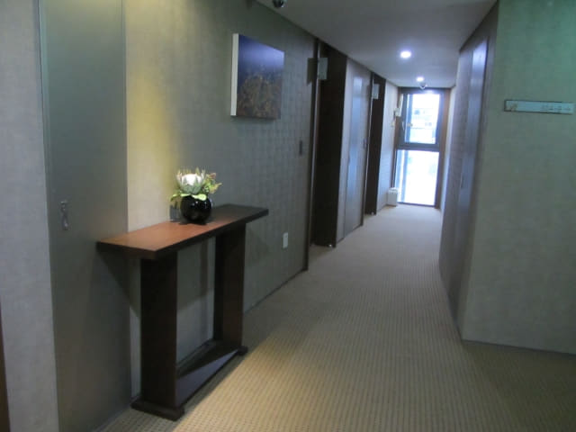
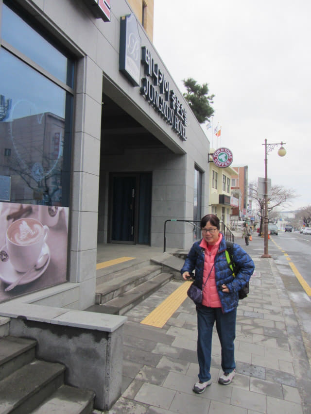
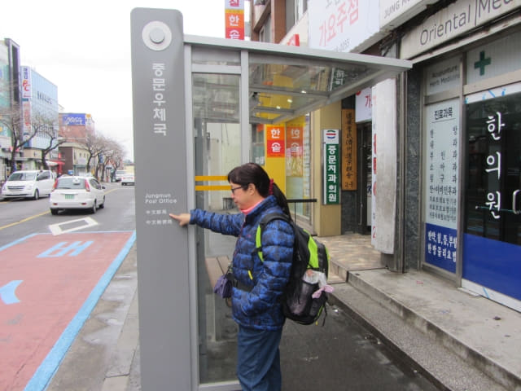
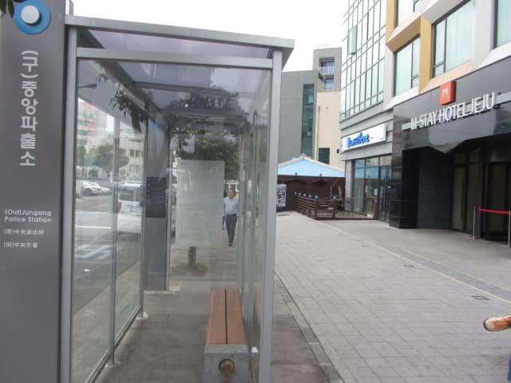
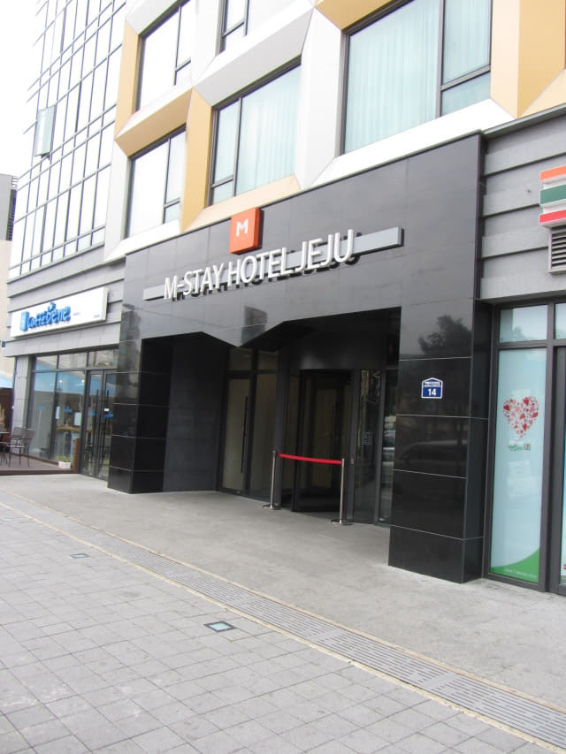
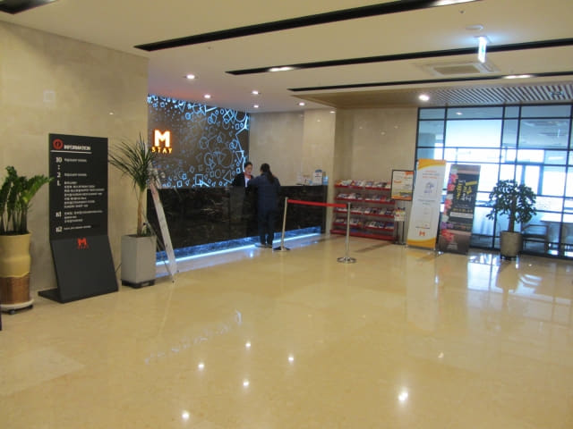
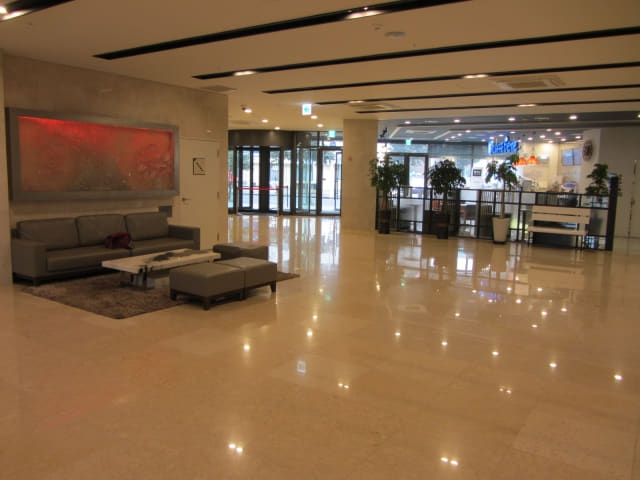
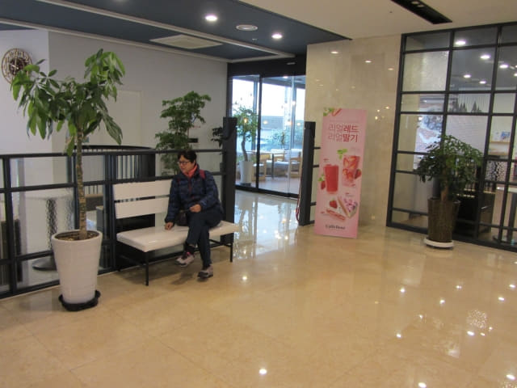

3.25.2017 (星期六)
早上六時半起床, 窗外天色仍然一片昏暗, 飄著毛毛雨絲, 便毫不考慮取消攀登漢拏山這重點行程, 提早乘巴士往下一個停留城市 – 西歸浦。沒辦法, 來了濟州島三天了, 每天都是下雨, 而根據天氣預測, 未來幾天仍然密雲有雨, 不可能再等天氣好轉攀登漢拏山, 會影響整個旅程的進度。原本住宿在中文區的本暱客雅酒店, 就是為了方便大清早乘 740 號巴士往漢拏山登山口, 無奈「謀事在人, 成事在天」!
梳洗完畢, 照例乘電梯往酒店一樓用自助早餐。

用完早餐, 返回房間收拾行李, 於早上九時十分離開住宿了兩晚的本暱客雅酒店-中文, 步行一會便到達酒店附近的中文郵局巴士站 (중문우체국), 準備乘100號巴士往西歸浦。


十分順利, 等了一會便登上了100號巴士 , 車廂內乘客不多, 十分舒適。沿途交通十分暢通, 不知為什麼, 巴士在途中某個站停靠了很久, 差不多有十分鐘, 約上午九時五十五分才抵達西歸浦的中區警署 (중앙파출소)巴士站。
西歸浦宿 M-STAY Hotel Jeju
下了車, 我們下榻的 M-STAY Hotel Jeju 就在巴士站旁, 十分方便。我們在西歸浦只住宿一晚, 明天便乘巴士往表善。


推門進入酒店一樓服務大堂, 面積很大, 看來十分豪華。因只是早上十時, 還未到入住時間, 便將行李寄放在一樓的服務處, 接著便開始今天西歸浦的行程。


